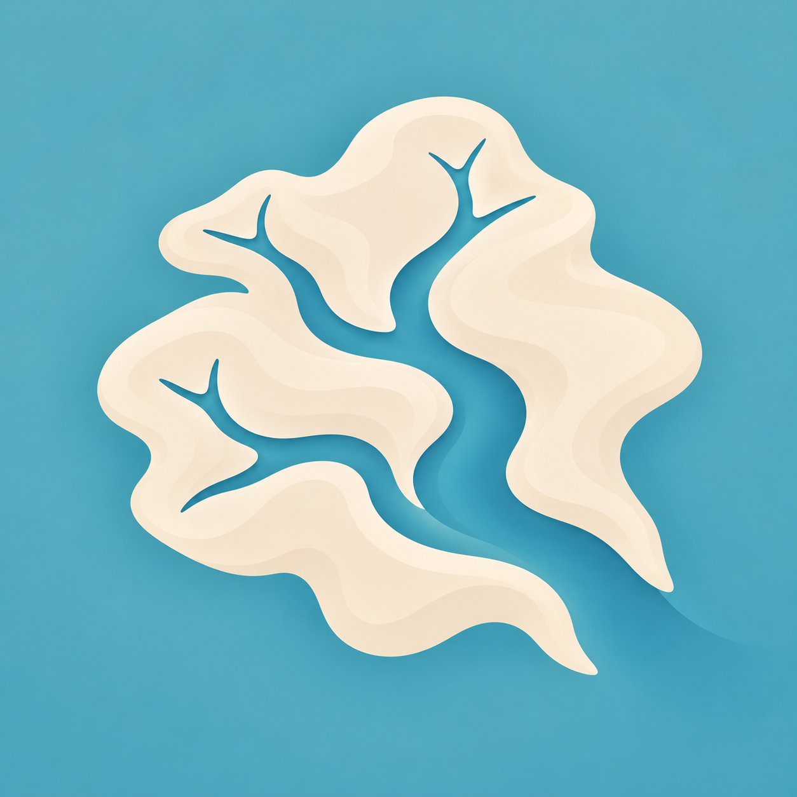
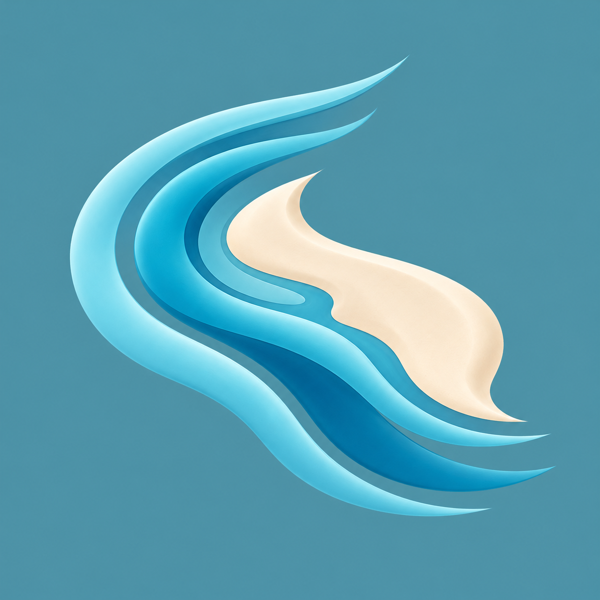
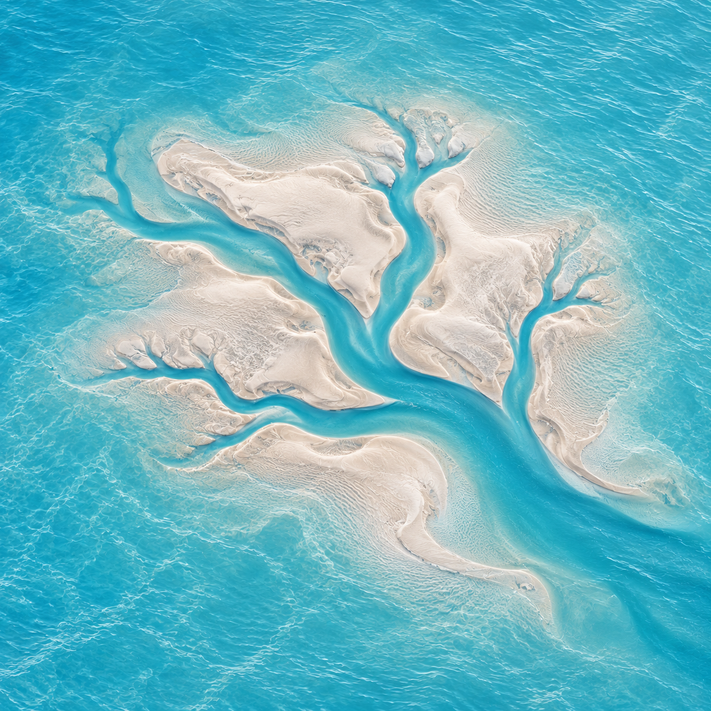
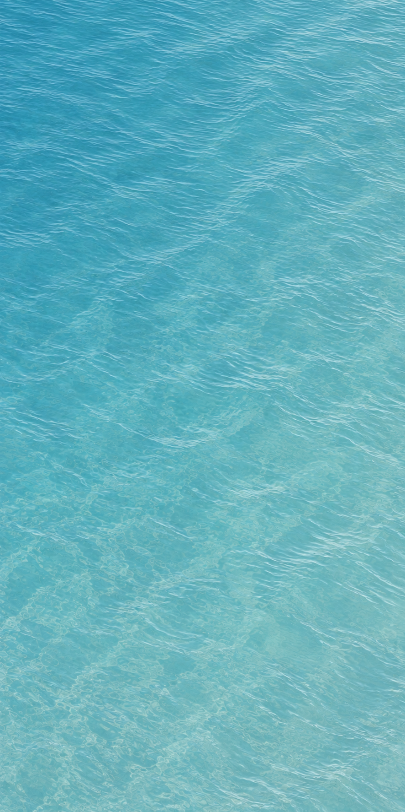
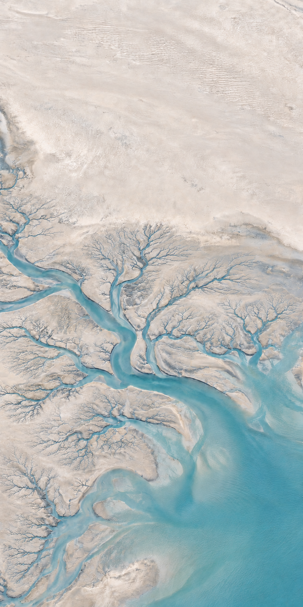

A · 潮沟入海
用清晰的潮沟分叉与入海主干识别“潮汐树”，保留简洁的图标轮廓。最直接连接首页主题。
三个新图标方向，共用现有开屏的海水蓝与首页的浅沙色。先比较形态和桌面尺寸，再决定哪一个进入 App。

用清晰的潮沟分叉与入海主干识别“潮汐树”，保留简洁的图标轮廓。最直接连接首页主题。

以同向弯曲的水带围绕沙洲，强调洋流的方向与延续。形态更流动，但潮汐树的识别较弱。

保留自然潮滩的浅浮雕与湿润岸线，把首页的真实材质浓缩为图标。更接近当前 UI 的自然感。
图标先建立“海水与潮滩”的印象；进入 App 后，海水成为全屏环境，再随退潮露出潮沟。连接来自共同的颜色、材质和地貌，不再插入一段独立 Logo 启动页。


本页只展示候选与衔接原则；尚未替换启动器图标，也未改动已认可的开屏动画。圆形与圆角为预览裁切，不是已导出的 Android 自适应图标资源。